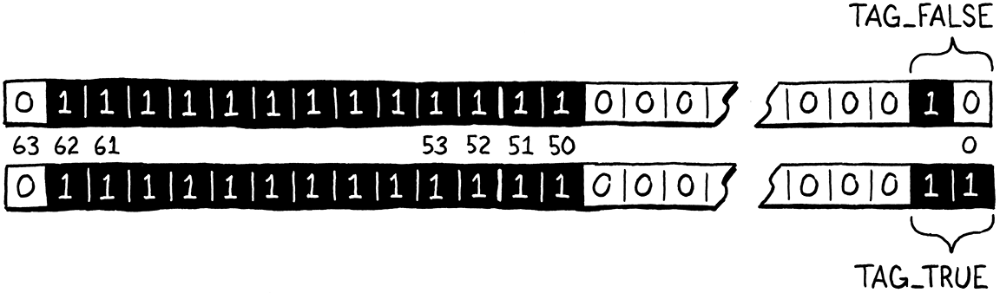
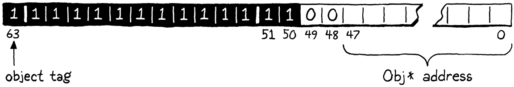

Optimisation
La soirée est le plus beau moment de la journée. Vous avez fait votre journée de travail. Maintenant vous pouvez mettre vos pieds sur la table et apprécier.
Kazuo Ishiguro, Les Vestiges du jour
Si je vivais encore à la Nouvelle-Orléans, j’appellerais ce chapitre un lagniappe, un petit quelque chose d’extra donné gratuitement à un client. Vous avez déjà un livre entier et une machine virtuelle complète, mais je veux que vous ayez un peu plus de plaisir à bidouiller sur clox. Cette fois, nous allons pour la pure performance. Nous appliquerons deux optimisations très différentes à notre machine virtuelle. Dans le processus, vous aurez une sensation de mesure et d’amélioration de la performance d’une implémentation de langage—ou de n’importe quel programme, vraiment.
30 . 1Mesurer la Performance
L’optimisation signifie prendre une application fonctionnelle et améliorer sa performance. Un programme optimisé fait la même chose, il prend juste moins de ressources pour le faire. La ressource à laquelle nous pensons habituellement lors de l’optimisation est la vitesse d’exécution, mais il peut aussi être important de réduire l’utilisation mémoire, le temps de démarrage, la taille de stockage persistant, ou la bande passante réseau. Toutes les ressources physiques ont un coût—même si le coût est surtout en temps humain gaspillé—donc le travail d’optimisation paie souvent.
Il fut un temps dans les premiers jours de l’informatique où un programmeur qualifié pouvait tenir l’architecture matérielle entière et le pipeline du compilateur dans sa tête et comprendre la performance d’un programme juste en pensant vraiment fort. Ces jours sont depuis longtemps révolus, séparés du présent par le microcode, les lignes de cache, la prédiction de branchement, les pipelines de compilateur profonds, et les jeux d’instructions mammouths. Nous aimons prétendre que C est un langage “bas niveau”, mais la pile de technologie entre
printf("Hello, world!");
et une salutation apparaissant à l’écran est maintenant périlleusement haute.
L’optimisation aujourd’hui est une science empirique. Notre programme est un border collie sprintant à travers la course d’obstacles du matériel. Si nous voulons qu’elle atteigne la fin plus vite, nous ne pouvons pas juste nous asseoir et ruminer sur la physiologie canine jusqu’à ce que l’illumination frappe. Au lieu de cela, nous avons besoin d’observer sa performance, voir où elle trébuche, et ensuite trouver des chemins plus rapides pour elle à prendre.
Tout comme l’entraînement d’agilité est particulier à un chien et une course d’obstacles, nous ne pouvons pas supposer que nos optimisations de machine virtuelle feront courir tous les programmes Lox plus vite sur tout le matériel. Différents programmes Lox stressent différentes zones de la VM, et différentes architectures ont leurs propres forces et faiblesses.
30 . 1 . 1Benchmarks
Quand nous ajoutons une nouvelle fonctionnalité, nous validons la correction en écrivant des tests—des programmes Lox qui utilisent une fonctionnalité et valident le comportement de la VM. Les tests épinglent la sémantique et assurent que nous ne brisons pas les fonctionnalités existantes quand nous en ajoutons de nouvelles. Nous avons des besoins similaires quand il s’agit de performance :
-
Comment validons-nous qu’une optimisation améliore bien la performance, et de combien ?
-
Comment assurons-nous que d’autres changements non liés ne régressent pas la performance ?
Les programmes Lox que nous écrivons pour accomplir ces buts sont des benchmarks. Ce sont des programmes soigneusement fabriqués qui stressent quelque partie de l’implémentation du langage. Ils mesurent non ce que le programme fait, mais combien de temps il prend pour le faire.
En mesurant la performance d’un benchmark avant et après un changement, vous pouvez voir ce que votre changement fait. Quand vous atterrissez une optimisation, tous les tests devraient se comporter exactement de la même manière qu’ils faisaient avant, mais avec espoir les benchmarks courent plus vite.
Une fois que vous avez une suite entière de benchmarks, vous pouvez mesurer non seulement qu’une optimisation change la performance, mais sur quelles sortes de code. Souvent vous trouverez que quelques benchmarks deviennent plus rapides tandis que d’autres deviennent plus lents. Ensuite vous avez à prendre des décisions difficiles sur pour quelles sortes de code votre implémentation de langage optimise.
La suite de benchmarks que vous choisissez d’écrire est une partie clé de cette décision. De la même manière que vos tests encodent vos choix autour de ce à quoi le comportement correct ressemble, vos benchmarks sont l’incarnation de vos priorités quand il s’agit de performance. Ils guideront quelles optimisations vous implémentez, donc choisissez vos benchmarks soigneusement, et n’oubliez pas de réfléchir périodiquement sur s’ils vous aident à atteindre vos plus larges buts.
Le benchmarking est un art subtil. Comme les tests, vous avez besoin de balancer ne pas sur-ajuster à votre implémentation tout en assurant que le benchmark chatouille réellement les chemins de code dont vous vous souciez. Quand vous mesurez la performance, vous avez besoin de compenser pour la variance causée par l’étranglement CPU, le cache, et d’autres bizarreries bizarres du matériel et du système d’exploitation. Je ne vous donnerai pas un sermon entier ici, mais traitez le benchmarking comme sa propre compétence qui s’améliore avec la pratique.
30 . 1 . 2Profilage
OK, donc vous avez quelques benchmarks maintenant. Vous voulez les faire aller plus vite. Maintenant quoi ? Tout d’abord, supposons que vous avez fait tout le travail évident, facile. Vous utilisez les bons algorithmes et structures de données—ou, au moins, vous n’utilisez pas ceux qui sont agressivement faux. Je ne considère pas utiliser une table de hachage au lieu d’une recherche linéaire à travers un énorme tableau non trié de “l’optimisation” tant que du “bon génie logiciel”.
Puisque le matériel est trop complexe pour raisonner sur la performance de notre programme depuis les premiers principes, nous devons aller sur le terrain. Cela signifie profiler. Un profileur, si vous n’en avez jamais utilisé un, est un outil qui court votre programme et piste l’utilisation des ressources matérielles comme le code exécute. Les simples vous montrent combien de temps a été passé dans chaque fonction dans votre programme. Les sophistiqués journalisent les miss de cache de données, les miss de cache d’instruction, les mauvaises prédictions de branchement, les allocations mémoire, et toutes sortes d’autres métriques.
Il y a beaucoup de profileurs là-dehors pour divers systèmes d’exploitation et langages. Sur n’importe quelle plateforme que vous programmez, cela vaut la peine de devenir familier avec un profileur décent. Vous n’avez pas besoin d’être un maître. J’ai appris des choses en quelques minutes de jeter un programme à un profileur qui m’auraient pris des jours à découvrir par moi-même à travers essai et erreur. Les profileurs sont des outils merveilleux, magiques.
30 . 2Sondage de Table de Hachage Plus Rapide
Assez pontifié, faisons monter quelques graphiques de performance vers la droite. La première optimisation que nous ferons, il s’avère, est à propos du plus minuscule changement possible que nous pourrions faire à notre VM.
Quand j’ai d’abord fait fonctionner la machine virtuelle à bytecode dont clox est descendu, j’ai fait ce que n’importe quel hacker de VM se respectant ferait. J’ai bricolé une paire de benchmarks, démarré un profileur, et couru ces scripts à travers mon interpréteur. Dans un langage typé dynamiquement comme Lox, une large fraction du code utilisateur est des accès de champ et appels de méthode, donc un de mes benchmarks ressemblait à quelque chose comme ceci :
class Zoo { init() { this.aardvark = 1; this.baboon = 1; this.cat = 1; this.donkey = 1; this.elephant = 1; this.fox = 1; } ant() { return this.aardvark; } banana() { return this.baboon; } tuna() { return this.cat; } hay() { return this.donkey; } grass() { return this.elephant; } mouse() { return this.fox; } } var zoo = Zoo(); var sum = 0; var start = clock(); while (sum < 100000000) { sum = sum + zoo.ant() + zoo.banana() + zoo.tuna() + zoo.hay() + zoo.grass() + zoo.mouse(); } print clock() - start; print sum;
Si vous n’avez jamais vu un benchmark avant, cela pourrait sembler risible. Quoi se passe ici ? Le programme lui-même n’a pas l’intention de faire quoi que ce soit d’utile. Ce qu’il fait est d’appeler un tas de méthodes et d’accéder à un tas de champs puisque ce sont les parties du langage qui nous intéressent. Les champs et méthodes vivent dans des tables de hachage, donc il prend soin de peupler au moins quelques clés intéressantes dans ces tables. C’est tout enveloppé dans une grosse boucle pour assurer que notre profileur a assez de temps d’exécution pour creuser dedans et voir où les cycles vont.
Avant que je vous dise ce que mon profileur m’a montré, passez une minute à prendre quelques devinettes. Où dans la base de code de clox pensez-vous que la VM a passé la plupart de son temps ? Y a-t-il du code que nous avons écrit dans les chapitres précédents que vous suspectez être particulièrement lent ?
Voici ce que j’ai trouvé : Naturellement, la fonction avec le plus grand temps inclusif est run(). (Temps inclusif signifie le temps total passé dans quelque fonction et toutes les autres fonctions qu’elle appelle—le temps total entre quand vous entrez dans la fonction et quand elle retourne.) Puisque run() est la boucle d’exécution de bytecode principale, elle pilote tout.
À l’intérieur de run(), il y a de petits morceaux de temps saupoudrés dans divers cas dans le switch bytecode pour des instructions communes comme OP_POP, OP_RETURN, et OP_ADD. Les grosses instructions lourdes sont OP_GET_GLOBAL avec 17% du temps d’exécution, OP_GET_PROPERTY à 12%, et OP_INVOKE qui prend un énorme 42% du temps d’exécution total.
Donc nous avons trois points chauds à optimiser ? En fait, non. Parce qu’il s’avère que ces trois instructions passent presque tout leur temps à l’intérieur d’appels à la même fonction : tableGet(). Cette fonction réclame un entier 72% du temps d’exécution (encore, inclusif). Maintenant, dans un langage typé dynamiquement, nous nous attendons à passer un bon peu de temps à chercher des trucs dans des tables de hachage—c’est une sorte de prix du dynamisme. Mais, quand même, wow.
30 . 2 . 1Enveloppement de clé lent
Si vous jetez un coup d’œil à tableGet(), vous verrez que c’est surtout une enveloppe autour d’un appel à findEntry() où la recherche réelle de table de hachage se produit. Pour rafraîchir votre mémoire, la voici en entier :
static Entry* findEntry(Entry* entries, int capacity, ObjString* key) { uint32_t index = key->hash % capacity; Entry* tombstone = NULL; for (;;) { Entry* entry = &entries[index]; if (entry->key == NULL) { if (IS_NIL(entry->value)) { // Empty entry. return tombstone != NULL ? tombstone : entry; } else { // We found a tombstone. if (tombstone == NULL) tombstone = entry; } } else if (entry->key == key) { // We found the key. return entry; } index = (index + 1) % capacity; } }
Lors de l’exécution de ce benchmark précédent—sur ma machine, au moins—la VM passe 70% du temps d’exécution total sur une ligne dans cette fonction. Des devinettes sur laquelle ? Non ? C’est celle-ci :
uint32_t index = key->hash % capacity;
Cette déréférence de pointeur n’est pas le problème. C’est le petit %. Il s’avère que l’opérateur modulo est vraiment lent. Beaucoup plus lent que d’autres opérateurs arithmétiques. Pouvons-nous faire quelque chose de mieux ?
Dans le cas général, il est vraiment dur de ré-implémenter un opérateur arithmétique fondamental dans le code utilisateur d’une manière qui est plus rapide que ce que le CPU lui-même peut faire. Après tout, notre code C compile ultimement vers les propres opérations arithmétiques du CPU. S’il y avait des trucs que nous pouvions utiliser pour aller plus vite, la puce serait déjà en train de les utiliser.
Cependant, nous pouvons prendre avantage du fait que nous savons plus sur notre problème que le CPU ne sait. Nous utilisons le modulo ici pour prendre un code de hachage de chaîne de clé et l’envelopper pour tenir dans les bornes du tableau d’entrées de la table. Ce tableau commence à huit éléments et grandit par un facteur de deux chaque fois. Nous savons—et le CPU et le compilateur C ne savent pas—que la taille de notre table est toujours une puissance de deux.
Parce que nous sommes des bidouilleurs de bits intelligents, nous connaissons un moyen plus rapide de calculer le reste d’un nombre modulo une puissance de deux : le masquage de bits. Disons que nous voulons calculer 229 modulo 64. La réponse est 37, ce qui n’est pas particulièrement apparent en décimal, mais est plus clair quand vous voyez ces nombres en binaire :

Sur le côté gauche de l’illustration, notez comment le résultat (37) est simplement le dividende (229) avec les deux bits les plus hauts rasés ? Ces deux bits les plus hauts sont les bits à ou à la gauche du bit 1 unique du diviseur.
Sur le côté droit, nous obtenons le même résultat en prenant 229 et en le faisant un ET bit à bit avec 63, qui est un de moins que notre puissance de deux diviseur original. Soustraire un d’une puissance de deux vous donne une série de bits 1. C’est exactement le masque dont nous avons besoin afin de dépouiller ces deux bits les plus à gauche.
En d’autres termes, vous pouvez calculer un nombre modulo n’importe quelle puissance de deux simplement en le faisant un ET bit à bit avec cette puissance de deux moins un. Je ne suis pas assez mathématicien pour vous prouver que cela fonctionne, mais si vous y réfléchissez, cela devrait faire sens. Nous pouvons remplacer cet opérateur modulo lent avec un décrément très rapide et un ET bit à bit. Nous changeons simplement la ligne de code offensante vers ceci :
static Entry* findEntry(Entry* entries, int capacity,
ObjString* key) {
in findEntry()
replace 1 line
uint32_t index = key->hash & (capacity - 1);
Entry* tombstone = NULL;
Les CPUs aiment les opérateurs binaires, donc il est dur d’améliorer cela.
Notre recherche par sondage linéaire peut avoir besoin d’envelopper autour de la fin du tableau, donc il y a un autre modulo dans findEntry() à mettre à jour.
// We found the key.
return entry;
}
in findEntry()
replace 1 line
index = (index + 1) & (capacity - 1);
}
Cette ligne ne s’est pas montrée dans le profileur puisque la plupart des recherches n’enveloppent pas.
La fonction findEntry() a une fonction sœur, tableFindString() qui fait une recherche de table de hachage pour interner les chaînes. Nous pouvons aussi bien appliquer les mêmes optimisations là-bas aussi. Cette fonction est appelée seulement lors de l’internement des chaînes, ce qui n’était pas lourdement stressé par notre benchmark. Mais un programme Lox qui créait beaucoup de chaînes pourrait notablement bénéficier de ce changement.
if (table->count == 0) return NULL;
in tableFindString()
replace 1 line
uint32_t index = hash & (table->capacity - 1);
for (;;) {
Entry* entry = &table->entries[index];
Et aussi quand le sondage linéaire enveloppe autour.
return entry->key;
}
in tableFindString()
replace 1 line
index = (index + 1) & (table->capacity - 1);
}
Voyons si nos correctifs valaient la peine. J’ai ajusté ce benchmark zoologique pour compter combien de lots de 10 000 appels il peut courir en dix secondes. Plus de lots égale une performance plus rapide. Sur ma machine utilisant le code non optimisé, le benchmark passe à travers 3 192 lots. Après cette optimisation, cela saute à 6 249.

C’est presque exactement deux fois plus de travail dans la même quantité de temps. Nous avons rendu la VM deux fois plus rapide (mise en garde habituelle : sur ce benchmark). C’est une victoire massive quand il s’agit d’optimisation. Habituellement vous vous sentez bien si vous pouvez gratter quelques points de pourcentage ici ou là. Puisque les méthodes, champs, et variables globales sont si prévalents dans les programmes Lox, cette minuscule optimisation améliore la performance à travers le tableau. Presque chaque programme Lox bénéficie.
Maintenant, le point de cette section n’est pas que l’opérateur modulo est profondément maléfique et vous devriez l’écraser hors de chaque programme que vous écrivez jamais. Il n’est pas non plus que la micro-optimisation est une compétence d’ingénierie vitale. Il est rare qu’un problème de performance ait une solution aussi étroite et efficace. Nous avons eu de la chance.
Le point est que nous ne savions pas que l’opérateur modulo était une perte de performance jusqu’à ce que notre profileur nous le dise ainsi. Si nous avions erré autour de la base de code de notre VM aveuglément devinant aux points chauds, nous ne l’aurions probablement pas remarqué. Ce que je veux que vous emportiez de cela est combien il est important d’avoir un profileur dans votre boîte à outils.
Pour renforcer ce point, allons de l’avant et courons le benchmark original dans notre VM maintenant optimisée et voyons ce que le profileur nous montre. Sur ma machine, tableGet() est encore un morceau assez large du temps d’exécution. C’est à s’attendre pour un langage typé dynamiquement. Mais il a chuté de 72% du temps d’exécution total vers le bas à 35%. C’est beaucoup plus en ligne avec ce que nous aimerions voir et montre que notre optimisation n’a pas juste rendu le programme plus rapide, mais rendu plus rapide de la façon que nous attendions. Les profileurs sont aussi utiles pour vérifier les solutions qu’ils sont pour découvrir les problèmes.
30 . 3Boxing NaN
Cette prochaine optimisation a une sensation très différente. Heureusement, malgré le nom bizarre, elle n’implique pas de frapper votre grand-mère (NdT : jeu de mots sur “boxing” = boxe). C’est différent, mais pas, genre, si différent. Avec notre optimisation précédente, le profileur nous disait où le problème était, et nous devions simplement utiliser un peu d’ingéniosité pour arriver avec une solution.
Cette optimisation est plus subtile, et ses effets de performance plus dispersés à travers la machine virtuelle. Le profileur ne nous aidera pas à venir avec ceci. Au lieu de cela, cela a été inventé par quelqu’un pensant profondément aux niveaux les plus bas de l’architecture machine.
Comme le titre dit, cette optimisation est appelée NaN boxing (mise en boîte NaN) ou parfois NaN tagging (étiquetage NaN). Personnellement j’aime le dernier nom parce que “boxing” tend à impliquer quelque sorte de représentation allouée sur le tas, mais le premier semble être le terme le plus largement utilisé. Cette technique change comment nous représentons les valeurs dans la VM.
Sur une machine 64 bits, notre type Value prend 16 octets. La structure a deux champs, une étiquette de type et une union pour la charge utile. Les plus grands champs dans l’union sont un pointeur Obj et un double, qui sont tous deux 8 octets. Pour garder le champ union aligné à une frontière de 8 octets, le compilateur ajoute du remplissage après l’étiquette aussi :

C’est assez gros. Si nous pouvions couper cela vers le bas, alors la VM pourrait empaqueter plus de valeurs dans la même quantité de mémoire. La plupart des ordinateurs ont plein de RAM ces jours-ci, donc les économies de mémoire directe ne sont pas une énorme affaire. Mais une représentation plus petite signifie plus de Values tenant dans une ligne de cache. Cela signifie moins de miss de cache, ce qui affecte la vitesse.
Si les Values ont besoin d’être alignées à leur plus grande taille de charge utile, et qu’un nombre Lox ou un pointeur Obj a besoin d’un plein 8 octets, comment pouvons-nous devenir plus petits ? Dans un langage typé dynamiquement comme Lox, chaque valeur a besoin de porter non seulement sa charge utile, mais assez d’information supplémentaire pour déterminer le type de la valeur à l’exécution. Si un nombre Lox utilise déjà les pleins 8 octets, où pourrions-nous écureuiller une paire de bits supplémentaires pour dire au runtime “ceci est un nombre” ?
C’est un des problèmes pérennes pour les hackers de langage dynamique. Cela les embête particulièrement parce que les langages typés statiquement n’ont généralement pas ce problème. Le type de chaque valeur est connu à la compilation, donc aucune mémoire supplémentaire n’est nécessaire à l’exécution pour le suivre. Quand votre compilateur C compile un int 32 bits, la variable résultante obtient exactement 32 bits de stockage.
Les gens du langage dynamique détestent perdre du terrain face au camp statique, donc ils sont venus avec un certain nombre de manières très intelligentes d’empaqueter l’information de type et une charge utile dans un petit nombre de bits. NaN boxing est l’une de celles-ci. C’est un ajustement particulièrement bon pour des langages comme JavaScript et Lua, où tous les nombres sont flottants double-précision. Lox est dans ce même bateau.
30 . 3 . 1Ce qui est (et n’est pas) un nombre ?
Avant que nous commencions à optimiser, nous avons besoin de vraiment comprendre comment notre ami le CPU représente les nombres à virgule flottante. Presque toutes les machines aujourd’hui utilisent le même schéma, encodé dans le vénérable parchemin IEEE 754, connu des mortels comme le “Standard IEEE pour l’Arithmétique à Virgule Flottante”.
Aux yeux de votre ordinateur, un nombre à virgule flottante IEEE 64 bits, double précision ressemble à ceci :

-
Commençant depuis la droite, les premiers 52 bits sont la fraction, mantisse, ou significande bits. Ils représentent les chiffres significatifs du nombre, comme un entier binaire.
-
À côté de cela sont 11 bits d’exposant. Ceux-ci vous disent de combien loin la mantisse est décalée du point décimal (enfin, binaire).
-
Le bit le plus haut est le bit de signe, qui indique si le nombre est positif ou négatif.
Je sais que c’est un peu vague, mais ce chapitre n’est pas une plongée profonde sur la représentation virgule flottante. Si vous voulez savoir comment l’exposant et la mantisse jouent ensemble, il y a déjà de meilleures explications là-dehors que je pourrais écrire.
La partie importante pour nos buts est que la spécification découpe un exposant à cas spécial. Quand tous les bits d’exposant sont mis, alors au lieu de juste représenter un nombre vraiment gros, la valeur a une signification différente. Ces valeurs sont des valeurs “Pas un Nombre” (hence, NaN). Elles représentent des concepts comme l’infini ou le résultat d’une division par zéro.
Tout double dont les bits d’exposant sont tous mis est un NaN, indépendamment des bits de mantisse. Cela signifie qu’il y a des tas et des tas de motifs de bits NaN différents. IEEE 754 divise ceux-ci en deux catégories. Les valeurs où le bit de mantisse le plus haut est 0 sont appelées NaNs signalants (signalling NaNs), et les autres sont NaNs silencieux (quiet NaNs). Les NaNs signalants sont destinés à être le résultat de calculs erronés, comme la division par zéro. Une puce peut détecter quand une de ces valeurs est produite et avorter un programme complètement. Ils peuvent s’auto-détruire si vous essayez d’en lire un.
Les NaNs silencieux sont supposés être plus sûrs à utiliser. Ils ne représentent pas de valeurs numériques utiles, mais ils devraient au moins ne pas mettre votre main en feu si vous les touchez.
Chaque double avec tous ses bits d’exposant mis et son bit de mantisse le plus haut mis est un NaN silencieux. Cela laisse 52 bits non comptabilisés. Nous éviterons l’un de ceux-ci pour que nous ne marchions pas sur la valeur “QNaN Floating-Point Indefinite” d’Intel, nous laissant 51 bits. Ces bits restants peuvent être n’importe quoi. Nous parlons de 2 251 799 813 685 248 motifs de bits NaN silencieux uniques.

Cela signifie qu’un double 64 bits a assez de place pour stocker toutes les diverses différentes valeurs numériques à virgule flottante et aussi a de la place pour un autre 51 bits de données que nous pouvons utiliser comme nous voulons. C’est plein de place pour mettre de côté une paire de motifs de bits pour représenter les valeurs nil, true, et false de Lox. Mais qu’en est-il des pointeurs Obj ? Les pointeurs n’ont-ils pas besoin d’un plein 64 bits aussi ?
Heureusement, nous avons un autre truc dans notre autre manche. Oui, techniquement les pointeurs sur une architecture 64 bits sont 64 bits. Mais, aucune architecture je connais de n’utilise réellement cet espace d’adresse entier. Au lieu de cela, la plupart des puces largement utilisées aujourd’hui utilisent seulement jamais les 48 bits bas. Les 16 bits restants sont soit non spécifiés ou toujours zéro.
Si nous avons 51 bits, nous pouvons fourrer un pointeur 48 bits là-dedans avec trois bits à épargner. Ces trois bits sont juste assez pour stocker de minuscules étiquettes de type pour distinguer entre nil, Booléens, et pointeurs Obj.
C’est ça le NaN boxing. À l’intérieur d’un simple double 64 bits, vous pouvez stocker toutes les différentes valeurs numériques à virgule flottante, un pointeur, ou n’importe laquelle d’une paire d’autres valeurs sentinelles spéciales. Moitié l’utilisation mémoire de notre structure Value courante, tout en retenant toute la fidélité.
Ce qui est particulièrement sympa à propos de cette représentation est qu’il n’y a pas besoin de convertir une valeur double numérique en une forme “mise en boîte”. Les nombres Lox sont juste des doubles 64 bits normaux. Nous avons encore besoin de vérifier leur type avant que nous les utilisions, puisque Lox est typé dynamiquement, mais nous n’avons pas besoin de faire de décalage de bit ou d’indirection de pointeur pour aller de “valeur” à “nombre”.
Pour les autres types de valeur, il y a une étape de conversion, bien sûr. Mais, heureusement, notre VM cache tout le mécanisme pour aller des valeurs aux types bruts derrière une poignée de macros. Réécrivez celles-ci pour implémenter le NaN boxing, et le reste de la VM devrait juste fonctionner.
30 . 3 . 2Support conditionnel
Je sais que les détails de cette nouvelle représentation ne sont pas clairs dans votre tête encore. Ne vous inquiétez pas, ils se cristalliseront comme nous travaillons à travers l’implémentation. Avant que nous arrivions à cela, nous allons mettre un peu d’échafaudage de temps de compilation en place.
Pour notre optimisation précédente, nous avons réécrit le code lent précédent et l’avons appelé fait. C’est un peu différent. Le NaN boxing compte sur quelques détails très bas niveau de comment une puce représente les nombres à virgule flottante et les pointeurs. Il fonctionne probablement sur la plupart des CPUs que vous êtes susceptible de rencontrer, mais vous ne pouvez jamais être totalement sûr.
Cela craindrait si notre VM perdait complètement le support pour une architecture juste à cause de sa représentation de valeur. Pour éviter cela, nous maintiendrons le support pour à la fois la vieille implémentation union étiquetée de Value et la nouvelle forme NaN-boxed. Nous sélectionnons quelle représentation nous voulons à la compilation utilisant ce drapeau :
#include <stdint.h>
#define NAN_BOXING
#define DEBUG_PRINT_CODE
Si c’est défini, la VM utilise la nouvelle forme. Sinon, elle revient au vieux style. Les quelques morceaux de code qui se soucient des détails de la représentation de valeur—principalement la poignée de macros pour envelopper et déballer les Values—varient basé sur si ce drapeau est mis. Le reste de la VM peut continuer le long de son chemin joyeux.
La plupart du travail se passe dans le module “value” où nous ajoutons une section pour le nouveau type.
typedef struct ObjString ObjString;
#ifdef NAN_BOXING typedef uint64_t Value; #else
typedef enum {
Quand le NaN boxing est activé, le type réel d’une Value est un entier plat, non signé de 64 bits. Nous pourrions utiliser double au lieu, ce qui rendrait les macros pour traiter les nombres Lox un peu plus simples. Mais toutes les autres macros ont besoin de faire des opérations binaires et uint64_t est un type beaucoup plus amical pour cela. En dehors de ce module, le reste de la VM ne se soucie pas vraiment d’une manière ou d’une autre.
Avant que nous commencions à ré-implémenter ces macros, nous fermons la branche #else du #ifdef à la fin des définitions pour la vieille représentation.
#define OBJ_VAL(object) ((Value){VAL_OBJ, {.obj = (Obj*)object}})
#endif
typedef struct {
Notre tâche restante est simplement de remplir cette première section #ifdef avec les nouvelles implémentations de tout le trucs déjà dans le côté #else. Nous travaillerons à travers cela un type de valeur à la fois, du plus facile au plus dur.
30 . 3 . 3Nombres
Nous commencerons avec les nombres puisqu’ils ont la représentation la plus directe sous NaN boxing. Pour “convertir” un double C en une Value clox NaN-boxed, nous n’avons pas besoin de toucher un seul bit—la représentation est exactement la même. Mais nous avons bien besoin de convaincre notre compilateur C de ce fait, ce que nous avons rendu plus dur en définissant Value pour être uint64_t.
Nous avons besoin d’amener le compilateur à prendre un ensemble de bits qu’il pense être un double et utiliser ces mêmes bits comme un uint64_t, ou vice versa. Ceci est appelé type punning (jeu de mots de type). Les programmeurs C et C++ ont fait cela depuis les jours des pantalons à pattes d’eph et des 8 pistes, mais les spécifications de langage ont hésité à dire laquelle des nombreuses façons de faire cela est officiellement sanctionnée.
Je connais une façon de convertir un double vers Value et retour que je crois est supportée par à la fois les specs C et C++. Malheureusement, elle ne tient pas dans une expression unique, donc les macros de conversion doivent appeler des fonctions d’aide. Voici la première macro :
typedef uint64_t Value;
#define NUMBER_VAL(num) numToValue(num)
#else
Cette macro passe le double ici :
#define NUMBER_VAL(num) numToValue(num)
static inline Value numToValue(double num) { Value value; memcpy(&value, &num, sizeof(double)); return value; }
#else
Je sais, bizarre, vrai ? La façon de traiter une série d’octets comme ayant un type différent sans changer leur valeur du tout est memcpy() ? Cela semble horriblement lent : Créez une variable locale. Passez son adresse au système d’exploitation à travers un appel système pour copier quelques octets. Ensuite renvoyez le résultat, qui est exactement les mêmes octets que l’entrée. Heureusement, parce que ceci est l’idiome supporté pour le type punning, la plupart des compilateurs reconnaissent le motif et optimisent le memcpy() entièrement.
“Déballer” un nombre Lox est l’image miroir.
typedef uint64_t Value;
#define AS_NUMBER(value) valueToNum(value)
#define NUMBER_VAL(num) numToValue(num)
Cette macro appelle cette fonction :
#define NUMBER_VAL(num) numToValue(num)
static inline double valueToNum(Value value) { double num; memcpy(&num, &value, sizeof(Value)); return num; }
static inline Value numToValue(double num) {
Cela fonctionne exactement pareil sauf que nous échangeons les types. Encore, le compilateur éliminera tout ça. Même si ces appels à memcpy() disparaîtront, nous avons encore besoin de montrer au compilateur quel memcpy() nous appelons donc nous avons aussi besoin d’un include.
#define clox_value_h
#include <string.h>
#include "common.h"
C’était beaucoup de code pour ultimement ne rien faire sauf faire taire le vérificateur de type C. Faire un test de type à l’exécution sur un nombre Lox est un peu plus intéressant. Si tout ce que nous avons sont exactement les bits pour un double, comment disons-nous que c’est un double ? Il est temps d’obtenir un peu de bidouillage de bits.
typedef uint64_t Value;
#define IS_NUMBER(value) (((value) & QNAN) != QNAN)
#define AS_NUMBER(value) valueToNum(value)
Nous savons que chaque Value qui n’est pas un nombre utilisera une représentation spéciale NaN silencieux. Et nous présumons que nous avons correctement évité n’importe quelle des représentations NaN significatives qui peuvent réellement être produites en faisant de l’arithmétique sur les nombres.
Si le double a tous ses bits NaN mis, et le bit NaN silencieux mis, et un de plus pour faire bonne mesure, nous pouvons être assez certains que c’est l’un des motifs de bits que nous avons nous-mêmes mis de côté pour d’autres types. Pour vérifier cela, nous masquons tous les bits sauf notre ensemble de bits NaN silencieux. Si tous ces bits sont mis, ce doit être une valeur NaN-boxed de quelque autre type Lox. Sinon, c’est réellement un nombre.
L’ensemble des bits NaN silencieux est déclaré comme ceci :
#ifdef NAN_BOXING
#define QNAN ((uint64_t)0x7ffc000000000000)
typedef uint64_t Value;
Ce serait bien si C supportait les littéraux binaires. Mais si vous faites la conversion, vous verrez que la valeur est la même que ceci :

C’est exactement tous les bits d’exposant, plus le bit NaN silencieux, plus un extra pour esquiver cette valeur Intel.
30 . 3 . 4Nil, true, et false
Le type suivant à gérer est nil. C’est assez simple puisqu’il y a seulement une valeur nil et ainsi nous avons besoin de seulement un motif de bit unique pour le représenter. Il y a deux autres valeurs singletons, les deux Booléens, true et false. Cela appelle pour trois motifs de bits uniques au total.
Deux bits nous donnent quatre combinaisons différentes, ce qui est plein. Nous réclamons les deux bits les plus bas de notre espace mantisse inutilisé comme une “étiquette de type” pour déterminer laquelle de ces trois valeurs singletons nous regardons. Les trois étiquettes de type sont définies comme ça :
#define QNAN ((uint64_t)0x7ffc000000000000)
#define TAG_NIL 1 // 01. #define TAG_FALSE 2 // 10. #define TAG_TRUE 3 // 11.
typedef uint64_t Value;
Notre représentation de nil est ainsi tous les bits requis pour définir notre représentation NaN silencieux avec les bits d’étiquette de type nil :

En code, nous vérifions les bits comme ça :
#define AS_NUMBER(value) valueToNum(value)
#define NIL_VAL ((Value)(uint64_t)(QNAN | TAG_NIL))
#define NUMBER_VAL(num) numToValue(num)
Nous faisons simplement un OU bit à bit des bits NaN silencieux et de l’étiquette de type, et ensuite faisons une petite danse de cast pour apprendre au compilateur C ce que nous voulons que ces bits signifient.
Puisque nil a seulement une représentation binaire unique, nous pouvons utiliser l’égalité sur uint64_t pour voir si une Value est nil.
typedef uint64_t Value;
#define IS_NIL(value) ((value) == NIL_VAL)
#define IS_NUMBER(value) (((value) & QNAN) != QNAN)
Vous pouvez deviner comment nous définissons les valeurs true et false.
#define AS_NUMBER(value) valueToNum(value)
#define FALSE_VAL ((Value)(uint64_t)(QNAN | TAG_FALSE)) #define TRUE_VAL ((Value)(uint64_t)(QNAN | TAG_TRUE))
#define NIL_VAL ((Value)(uint64_t)(QNAN | TAG_NIL))
Les bits ressemblent à ceci :
Pour convertir un booléen C en un Booléen Lox, nous comptons sur ces deux valeurs singletons et le bon vieil opérateur conditionnel.
#define AS_NUMBER(value) valueToNum(value)
#define BOOL_VAL(b) ((b) ? TRUE_VAL : FALSE_VAL)
#define FALSE_VAL ((Value)(uint64_t)(QNAN | TAG_FALSE))
Il y a probablement une façon binaire plus intelligente de faire cela, mais mon intuition est que le compilateur peut en trouver une plus vite que je ne peux. Aller dans l’autre direction est plus simple.
#define IS_NUMBER(value) (((value) & QNAN) != QNAN)
#define AS_BOOL(value) ((value) == TRUE_VAL)
#define AS_NUMBER(value) valueToNum(value)
Puisque nous savons qu’il y a exactement deux représentations binaires Booléennes dans Lox—contrairement à C où toute valeur non-zéro peut être considérée “vraie”—si ce n’est pas true, ce doit être false. Cette macro suppose bien que vous l’appelez seulement sur une Value que vous savez être un Booléen Lox. Pour vérifier cela, il y a une macro de plus.
typedef uint64_t Value;
#define IS_BOOL(value) (((value) | 1) == TRUE_VAL)
#define IS_NIL(value) ((value) == NIL_VAL)
Cela semble un peu étrange. Une macro plus évidente ressemblerait à ceci :
#define IS_BOOL(v) ((v) == TRUE_VAL || (v) == FALSE_VAL)
Malheureusement, ce n’est pas sûr. L’expansion mentionne v deux fois, ce qui signifie que si cette expression a de quelconques effets de bord, ils seront exécutés deux fois. Nous pourrions avoir la macro appelant une fonction séparée, mais, ugh, quelle corvée.
Au lieu de cela, nous faisons un OU bit à bit d’un 1 sur la valeur pour fusionner les deux seuls motifs de bits Booléens valides. Cela laisse trois états potentiels dans lesquels la valeur peut être :
-
Elle était
FALSE_VALet a maintenant été convertie enTRUE_VAL. -
Elle était
TRUE_VALet le| 1n’a rien fait et c’est encoreTRUE_VAL. -
C’est quelque autre valeur, non-Booléenne.
À ce point, nous pouvons simplement comparer le résultat à TRUE_VAL pour voir si nous sommes dans les deux premiers états ou le troisième.
30 . 3 . 5Objets
Le dernier type de valeur est le plus dur. Contrairement aux valeurs singletons, il y a des milliards de valeurs de pointeur différentes que nous devons mettre en boîte à l’intérieur d’un NaN. Cela signifie que nous avons besoin à la fois de quelque sorte d’étiquette pour indiquer que ces NaNs particuliers sont des pointeurs Obj, et de place pour les adresses elles-mêmes.
Les bits d’étiquette que nous avons utilisés pour les valeurs singletons sont dans la région où j’ai décidé de stocker le pointeur lui-même, donc nous ne pouvons pas facilement utiliser un bit différent là pour indiquer que la valeur est une référence d’objet. Cependant, il y a un autre bit que nous n’utilisons pas. Puisque toutes nos valeurs NaN ne sont pas des nombres—c’est juste là dans le nom—le bit de signe n’est utilisé pour rien. Nous allons aller de l’avant et utiliser cela comme l’étiquette de type pour les objets. Si l’un de nos NaNs silencieux a son bit de signe mis, alors c’est un pointeur Obj. Sinon, ce doit être l’une des valeurs singletons précédentes.
Si le bit de signe est mis, alors les bits bas restants stockent le pointeur vers l’Obj :
Pour convertir un pointeur Obj brut en une Value, nous prenons le pointeur et mettons tous les bits NaN silencieux et le bit de signe.
#define NUMBER_VAL(num) numToValue(num)
#define OBJ_VAL(obj) \ (Value)(SIGN_BIT | QNAN | (uint64_t)(uintptr_t)(obj))
static inline double valueToNum(Value value) {
Le pointeur lui-même est un plein 64 bits, et en principe, il pourrait ainsi chevaucher avec certains de ces bits NaN silencieux et signe. Mais en pratique, au moins sur les architectures que j’ai testées, tout au-dessus du 48ème bit dans un pointeur est toujours zéro. Il y a beaucoup de casting se passant ici, ce que j’ai trouvé nécessaire pour satisfaire certains des compilateurs C les plus difficiles, mais le résultat final est juste de coincer quelques bits ensemble.
Nous définissons le bit de signe comme ça :
#ifdef NAN_BOXING
#define SIGN_BIT ((uint64_t)0x8000000000000000)
#define QNAN ((uint64_t)0x7ffc000000000000)
Pour obtenir le pointeur Obj de retour, nous masquons simplement tous ces bits extra.
#define AS_NUMBER(value) valueToNum(value)
#define AS_OBJ(value) \ ((Obj*)(uintptr_t)((value) & ~(SIGN_BIT | QNAN)))
#define BOOL_VAL(b) ((b) ? TRUE_VAL : FALSE_VAL)
Le tilde (~), si vous n’avez pas fait assez de manipulation de bits pour le rencontrer avant, est le NON bit à bit. Il bascule tous les uns et zéros dans son opérande. En masquant la valeur avec la négation binaire des bits NaN silencieux et signe, nous effaçons ces bits et laissons les bits de pointeur rester.
Une dernière macro :
#define IS_NUMBER(value) (((value) & QNAN) != QNAN)
#define IS_OBJ(value) \ (((value) & (QNAN | SIGN_BIT)) == (QNAN | SIGN_BIT))
#define AS_BOOL(value) ((value) == TRUE_VAL)
Une Value stockant un pointeur Obj a son bit de signe mis, mais aussi n’importe quel nombre négatif. Pour dire si une Value est un pointeur Obj, nous avons besoin de vérifier qu’à la fois le bit de signe et tous les bits NaN silencieux sont mis. C’est similaire à comment nous détectons le type des valeurs singletons, sauf que cette fois nous utilisons le bit de signe comme l’étiquette.
30 . 3 . 6Fonctions de valeur
Le reste de la VM passe habituellement par les macros lors du travail avec les Values, donc nous avons presque fini. Cependant, il y a une couple de fonctions dans le module “value” qui jettent un coup d’œil à l’intérieur de la boîte autrement noire de Value et travaillent avec son encodage directement. Nous avons besoin de fixer celles-ci aussi.
La première est printValue(). Elle a un code séparé pour chaque type de valeur. Nous n’avons plus d’énumération de type explicite sur laquelle nous pouvons switcher, donc au lieu de cela nous utilisons une série de tests de type pour gérer chaque sorte de valeur.
void printValue(Value value) {
in printValue()
#ifdef NAN_BOXING if (IS_BOOL(value)) { printf(AS_BOOL(value) ? "true" : "false"); } else if (IS_NIL(value)) { printf("nil"); } else if (IS_NUMBER(value)) { printf("%g", AS_NUMBER(value)); } else if (IS_OBJ(value)) { printObject(value); } #else
switch (value.type) {
C’est techniquement un tout petit peu plus lent qu’un switch, mais comparé au surcoût d’écrire réellement vers un flux, c’est négligeable.
Nous supportons encore la représentation union étiquetée originale, donc nous gardons le vieux code et l’entourons dans la section conditionnelle #else.
}
in printValue()
#endif
}
L’autre opération est de tester deux valeurs pour l’égalité.
bool valuesEqual(Value a, Value b) {
in valuesEqual()
#ifdef NAN_BOXING return a == b; #else
if (a.type != b.type) return false;
Cela ne devient pas beaucoup plus simple que ça ! Si les deux représentations binaires sont identiques, les valeurs sont égales. Cela fait la bonne chose pour les valeurs singletons puisque chacune a une représentation binaire unique et elles sont seulement égales à elles-mêmes. Cela fait aussi la bonne chose pour les pointeurs Obj, puisque les objets utilisent l’identité pour l’égalité—deux références Obj sont égales seulement si elles pointent vers l’objet exactement identique.
C’est surtout correct pour les nombres aussi. La plupart des nombres à virgule flottante avec différentes représentations binaires sont des valeurs numériques distinctes. Hélas, IEEE 754 contient un nid-de-poule pour nous faire trébucher. Pour des raisons qui ne sont pas entièrement claires pour moi, la spec mandate que les valeurs NaN ne sont pas égales à elles-mêmes. Ce n’est pas un problème pour les NaNs silencieux spéciaux que nous utilisons pour nos propres buts. Mais il est possible de produire un “vrai” NaN arithmétique dans Lox, et si nous voulons implémenter correctement les nombres IEEE 754, alors la valeur résultante n’est pas supposée être égale à elle-même. Plus concrètement :
var nan = 0/0; print nan == nan;
IEEE 754 dit que ce programme est supposé afficher “false”. Il fait la bonne chose avec notre vieille représentation union étiquetée parce que le cas VAL_NUMBER applique == à deux valeurs que le compilateur C sait être des doubles. Ainsi le compilateur génère la bonne instruction CPU pour effectuer une égalité virgule flottante IEEE.
Notre nouvelle représentation brise cela en définissant Value pour être un uint64t. Si nous voulons être _pleinement conformes avec IEEE 754, nous avons besoin de gérer ce cas.
#ifdef NAN_BOXING
in valuesEqual()
if (IS_NUMBER(a) && IS_NUMBER(b)) { return AS_NUMBER(a) == AS_NUMBER(b); }
return a == b;
Je sais, c’est bizarre. Et il y a un coût de performance à faire ce test de type chaque fois que nous vérifions deux valeurs Lox pour l’égalité. Si nous sommes prêts à sacrifier un peu de compatibilité—qui se soucie vraiment si NaN n’est pas égal à lui-même ?—nous pourrions laisser cela de côté. Je laisserai à vous de décider à quel point vous voulez être pédant.
Finalement, nous fermons la section de compilation conditionnelle autour de la vieille implémentation.
}
in valuesEqual()
#endif
}
Et c’est ça. Cette optimisation est complète, comme l’est notre machine virtuelle clox. C’était la dernière ligne de nouveau code dans le livre.
30 . 3 . 7Évaluer la performance
Le code est fait, mais nous avons encore besoin de comprendre si nous avons réellement rendu quoi que ce soit meilleur avec ces changements. Évaluer une optimisation comme celle-ci est très différent de la précédente. Là, nous avions un point chaud clair visible dans le profileur. Nous avons fixé cette partie du code et pouvions instantanément voir le point chaud devenir plus rapide.
Les effets de changer la représentation de valeur sont plus diffus. Les macros sont expansées sur place où qu’elles soient utilisées, donc les changements de performance sont étalés à travers la base de code d’une manière qui est dure pour beaucoup de profileurs de bien traquer, spécialement dans une build optimisée.
Nous ne pouvons aussi pas facilement raisonner sur les effets de notre changement. Nous avons rendu les valeurs plus petites, ce qui réduit les miss de cache tout à travers la VM. Mais l’effet de performance réel monde-réel de ce changement est hautement dépendant de l’utilisation mémoire du programme Lox étant couru. Un minuscule microbenchmark Lox peut ne pas avoir assez de valeurs dispersées autour en mémoire pour que l’effet soit notable, et même des choses comme les adresses distribuées à nous par l’allocateur de mémoire C peuvent impacter les résultats.
Si nous avons fait notre travail correctement, essentiellement tout devient un peu plus rapide, spécialement sur des programmes Lox plus larges, plus complexes. Mais il est possible que les opérations binaires extra que nous faisons lors du NaN-boxing des valeurs annulent les gains de la meilleure utilisation mémoire. Faire du travail de performance comme cela est énervant parce que vous ne pouvez pas facilement prouver que vous avez rendu la VM meilleure. Vous ne pouvez pas pointer un microbenchmark unique chirurgicalement ciblé et dire, “Là, tu vois ?”
Au lieu de cela, ce dont nous avons vraiment besoin est une suite de plus larges benchmarks. Idéalement, ils seraient distillés d’applications du monde réel—pas qu’une telle chose existe pour un langage jouet comme Lox. Alors nous pouvons mesurer les changements de performance agrégés à travers tous ceux-ci. J’ai fait de mon mieux pour bricoler une poignée de programmes Lox plus larges. Sur ma machine, la nouvelle représentation de valeur semble rendre tout grossièrement 10% plus rapide à travers le tableau.
Ce n’est pas une énorme amélioration, spécialement comparé à l’effet profond de rendre les recherches de table de hachage plus rapides. J’ai ajouté cette optimisation en grande partie parce que c’est un bon exemple d’un certain genre de travail de performance que vous pouvez expérimenter, et honnêtement, parce que je pense que c’est techniquement vraiment cool. Cela pourrait ne pas être la première chose que j’attraperais si j’essayais sérieusement de rendre clox plus rapide. Il y a probablement d’autres fruits plus bas.
Mais, si vous vous trouvez travaillant sur un programme où toutes les victoires faciles ont été prises, alors à un certain point vous pouvez vouloir penser à régler votre représentation de valeur. J’espère que ce chapitre a brillé une lumière sur certaines des options que vous avez dans cette zone.
30 . 4Où aller ensuite
Nous arrêterons ici avec le langage Lox et nos deux interpréteurs. Nous pourrions bricoler dessus pour toujours, ajoutant de nouvelles fonctionnalités de langage et des améliorations de vitesse intelligentes. Mais, pour ce livre, je pense que nous avons atteint un endroit naturel pour appeler notre travail complet. Je ne ressasserai pas tout ce que nous avons appris dans les nombreuses pages passées. Vous étiez là avec moi et vous vous souvenez. Au lieu de cela, j’aimerais prendre une minute pour parler de où vous pourriez aller d’ici. Quelle est la prochaine étape dans votre voyage de langage de programmation ?
La plupart d’entre vous ne passerez probablement pas une partie significative de votre carrière travaillant dans les compilateurs ou interpréteurs. C’est une tranche assez petite de la tarte académique de l’informatique, et un segment encore plus petit de l’ingénierie logicielle dans l’industrie. C’est OK. Même si vous ne travaillez jamais sur un compilateur encore dans votre vie, vous en utiliserez certainement un, et j’espère que ce livre vous a équipé avec une meilleure compréhension de comment les langages de programmation que vous utilisez sont conçus et implémentés.
Vous avez aussi appris une poignée de structures de données fondamentales importantes et obtenu de la pratique faisant du travail de profilage et d’optimisation bas niveau. Ce genre d’expertise est utile peu importe quel domaine vous programmez.
J’espère aussi que je vous ai donné une nouvelle façon de regarder et résoudre les problèmes. Même si vous ne travaillez jamais sur un langage encore, vous pouvez être surpris de découvrir combien de problèmes de programmation peuvent être vus comme type-langage. Peut-être ce générateur de rapport que vous avez besoin d’écrire peut être modélisé comme une série d’“instructions” basées sur pile que le générateur “exécute”. Cette interface utilisateur que vous avez besoin de rendre ressemble terriblement à traverser un AST.
Si vous voulez aller plus loin dans le terrier de lapin des langages de programmation, voici quelques suggestions pour quelles branches dans le tunnel explorer :
-
Notre compilateur bytecode simple, à une passe nous a poussés vers surtout de l’optimisation à l’exécution. Dans une implémentation de langage mature, l’optimisation à la compilation est généralement plus importante, et le champ des optimisations de compilateur est incroyablement riche. Attrapez un livre de compilateurs classique, et rebatissez le front end de clox ou jlox pour être un pipeline de compilation sophistiqué avec quelques représentations intermédiaires intéressantes et passes d’optimisation.
Le typage dynamique placera quelques restrictions sur jusqu’où vous pouvez aller, mais il y a encore beaucoup que vous pouvez faire. Ou peut-être vous voulez faire un grand saut et ajouter des types statiques et un vérificateur de type à Lox. Cela donnera certainement à votre front end beaucoup plus à mâcher.
<aside name="cooper">J’aime Engineering a Compiler de Cooper et Torczon pour cela. Les livres Modern Compiler Implementation d’Appel sont aussi bien regardés.
</aside> -
Dans ce livre, je vise à être correct, mais pas particulièrement rigoureux. Mon but est surtout de vous donner une intuition et une sensation pour faire du travail de langage. Si vous aimez plus de précision, alors le monde entier de l’académie des langages de programmation vous attend. Les langages et compilateurs ont été étudiés formellement depuis avant que nous ayons même des ordinateurs, donc il n’y a pas de pénurie de livres et papiers sur la théorie d’analyseur, les systèmes de type, la sémantique, et la logique formelle. Descendre ce chemin vous apprendra aussi comment lire des papiers CS, ce qui est une compétence précieuse en son propre droit.
-
Ou, si vous appréciez juste vraiment hacker sur et faire des langages, vous pouvez prendre Lox et le transformer en votre propre jouet. Changez la syntaxe pour quelque chose qui ravit votre œil. Ajoutez des fonctionnalités manquantes ou enlevez celles que vous n’aimez pas. Coincez de nouvelles optimisations là-dedans.
<aside name="license">Le texte de ce livre est sous copyright à moi, mais le code et les implémentations de jlox et clox utilisent la très permissive Licence MIT. Vous êtes plus que bienvenus de prendre l’un ou l’autre de ces interpréteurs et faire tout ce que vous voulez avec eux. Allez en ville.
Si vous faites des changements significatifs au langage, ce serait bon de changer aussi le nom, surtout pour éviter de rendre confus les gens à propos de ce que le nom “Lox” représente.
</aside>Éventuellement vous pouvez arriver à un point où vous avez quelque chose que vous pensez que d’autres pourraient utiliser aussi. Cela vous amène dans le monde très distinct de la popularité des langages de programmation. Attendez-vous à passer une tonne de temps à écrire de la documentation, des programmes d’exemple, des outils, et des bibliothèques utiles. Le champ est bondé avec des langages rivalisant pour des utilisateurs. Pour prospérer dans cet espace vous aurez à mettre votre chapeau de marketing et vendre. Tout le monde n’apprécie pas ce genre de travail face au public, mais si vous le faites, cela peut être incroyablement gratifiant de voir des gens utiliser votre langage pour s’exprimer eux-mêmes.
Ou peut-être ce livre a satisfait votre envie et vous arrêterez ici. Peu importe le chemin que vous prenez, ou ne prenez pas, il y a une leçon que j’espère loger dans votre cœur. Comme je l’étais, vous pouvez avoir été initialement intimidés par les langages de programmation. Mais dans ces chapitres, vous avez vu que même du matériel vraiment difficile peut être taclé par nous mortels si nous mettons nos mains dans la saleté et le prenons une étape à la fois. Si vous pouvez gérer les compilateurs et interpréteurs, vous pouvez faire tout ce à quoi vous mettez votre esprit.
30 . 5Défis
Assigner des devoirs le dernier jour d’école semble cruel mais si vous voulez vraiment quelque chose à faire durant vos vacances d’été :
-
Démarrez votre profileur, courez une paire de benchmarks, et cherchez d’autres points chauds dans la VM. Voyez-vous quelque chose dans le runtime que vous pouvez améliorer ?
-
Beaucoup de chaînes dans les programmes utilisateur du monde réel sont petites, souvent seulement un caractère ou deux. C’est moins une préoccupation dans clox parce que nous internons les chaînes, mais la plupart des VMs ne le font pas. Pour celles qui ne le font pas, allouer sur le tas un minuscule tableau de caractères pour chacune de ces petites chaînes et ensuite représenter la valeur comme un pointeur vers ce tableau est gaspilleur. Souvent, le pointeur est plus grand que les caractères de la chaîne. Un truc classique est d’avoir une représentation de valeur séparée pour les petites chaînes qui stocke les caractères en ligne dans la valeur.
Commençant depuis la représentation union étiquetée originale de clox, implémentez cette optimisation. Écrivez un couple de benchmarks pertinents et voyez si cela aide.
-
Réfléchissez en arrière sur votre expérience avec ce livre. Quelles parties de celui-ci ont bien marché pour vous ? Quoi non ? Était-ce plus facile pour vous d’apprendre de bas en haut ou de haut en bas ? Les illustrations aidaient-elles ou distrayaient-elles ? Les analogies clarifiaient-elles ou rendaient-elles confus ?
Plus vous comprenez votre style d’apprentissage personnel, plus efficacement vous pouvez uploader la connaissance dans votre tête. Vous pouvez spécifiquement cibler le matériel qui vous enseigne de la façon dont vous apprenez le mieux.